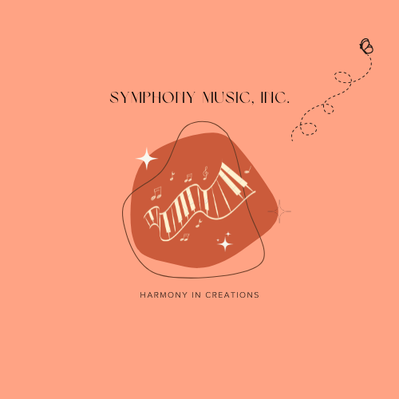

PT. Symphony Music Instrumental Fresh
Menurut Nawafi Amiril Umam, musisi yang tergabung dalam
ITS Jazz Surabaya, industri musik merupakan satu
bidang bisnis yang memperjualbelikan suatu komposisi, rekaman,
atau hal lain yang mengaitkan bisnis dengan musik.
Dimana dalam bidang musik, toko ini memberikan pelayanan mengenai
penjualan alat musik.